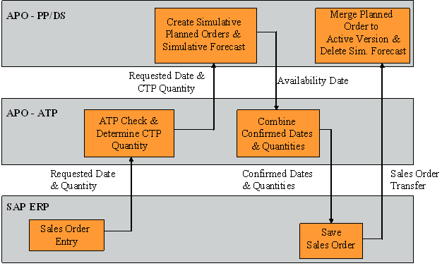
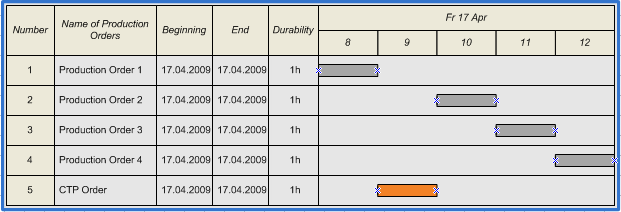

'Capable-to-Promise (CTP)'
Capable-to-Promise (CTP)
CTP describes the possibility to call PP/DS during an ATP check, if the required quantity of a product is not completely available. The basic idea of CTP is to create planned orders in PP/DS and check for component availability.
The CTP functionality is usually applied either in a typical make-to-order environment or in cases where planning according to forecasts is not sufficient.
An important advantage of CTP is that both capacities and components availability are checked before a sales order is confirmed.
Steps during the CTP check:
In the following figure you can see the steps that have to be passed during a CTP check. These steps include both ATP ad PP/DS functionalities:

First of all a sales order enters the connected OLTP-system, for example an ERP-system like SAP ERP. Date and quantity of the sales order are transferred to the ATP module of SAP APO. After the ATP check the requested date and quantity for CTP is calculated in the ATP module. The requested date for CTP is always identical to the requested date of the sales order, wheras the requested CTP quantity might differ from the requested quantity of the sales order depending on the result of a product check that is possibly performed first. In a further step PP/DS is called with these informations. The PP/DS module creates a simulative planned order according to the production restrictions and a simulative demand for the same quantity in order to keep any demand from using this planned order. In a next step PP/DS transfers the availability date for the CTP quantity. Then ATP combines the confirmations of the ATP check with the PP/DS result. Finally the sales order is saved in SAP ERP and transferred to SAP APO. The "simulative" status of the planned order in PP/DS is changed to "normal" and the simulative demand is deleted.
Start of production:
There are different variants to start CTP within the advanced check methods:
- start production immediately
- start production after product availability check (receipts are only created for the open quantity)
- start production after all basic methods
Another possibility to start CTP is to call PP/DS by the location determination procedure of integrated rule maintenance.
The following simplified example helps to understand this procedure. You can see different planned orders of a certain production line. On this production line in a certain plant a specific product of the Frutado AG is produced. The production process only consists of the filling process of the beverages. We assume that the filling time for one production order is one hour. The figure displays all the planned production orders on 17 April 2009 from 08:00 till 12:00 o´clock. As you can see already four prodction orders are dispatched. However, in the time period from 09:00 till 10:00 o´clock there is a production capacity of one our available. In this time period you can dispatch the CTP order assumed that enough material is available to produce the required product.

Nevertheless you should always regard alternative modelling approaches first before you decide to use CTP. If the bottleneck is for example more on the production capacity side, then allocations are considered as a possible alternative to CTP. When the bottleneck is rather the component availability, then multilevel ATP should be prefered.